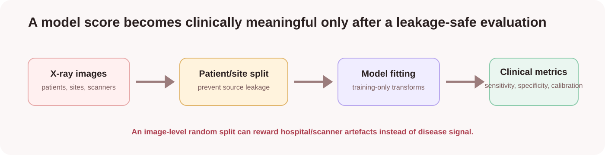
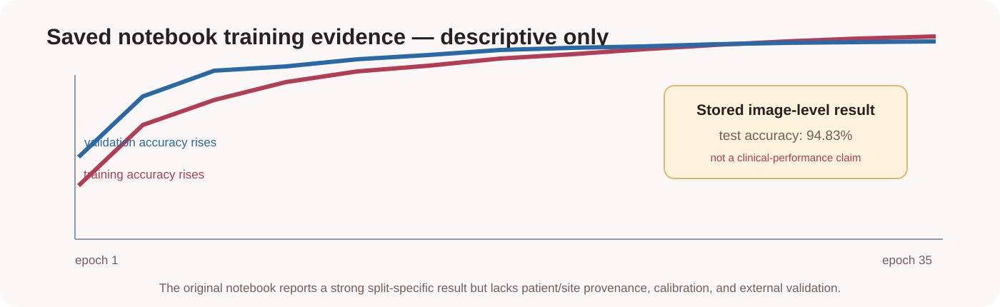

A high image-folder score is not a diagnostic result.
The saved notebook trains a CNN on COVID19/NORMAL folders and reports 94.83% test accuracy. That is a historical image-level result. Without patient/site provenance, calibration, and external validation, it cannot establish disease detection in clinical practice.

What the experiment actually builds
| Stage | Purpose |
|---|---|
| 150 × 150 rescaling | Creates a fixed input tensor and normalised pixel values. |
| Augmentation | Applies train-time zoom/flip variation; it is not clinical validation. |
| Two convolution blocks | Learn local contrast and texture patterns from images. |
| Dropout | Regularises feature learning to reduce memorisation. |
| Sigmoid output | Returns a binary class score for the labelled folders. |
The saved architecture has 22.48 million parameters, mostly from the flatten-to-dense connection. This large capacity makes data independence and external validation especially important.
What the stored result shows

The notebook reported 1,449 training, 362 validation, and 484 test images. The result is retained as learning history; it is deliberately not presented as a medical-performance result.
What must be known first
| Evidence | Reason |
|---|---|
| Patient IDs or patient grouping | Prevents the same patient entering training and test. |
| Hospital/scanner provenance | Allows source-leakage checks and external-site testing. |
| Image view and acquisition protocol | Ensures images are clinically comparable. |
| Label definition and adjudication | Clarifies what the folder label represents. |
Metrics needed beyond accuracy
| Metric | Question it answers |
|---|---|
| Sensitivity | How often are positive-labelled images missed? |
| Specificity | How often are normal images wrongly flagged? |
| Precision / PR-AUC | When the model flags an image, how often is it correct? |
| Calibration | Do reported confidence scores match observed frequency? |
| External-site test | Does performance survive a new acquisition setting? |
Run only with authorised, audited data
python -m venv .venv .venv\Scripts\Activate.ps1 pip install -r requirements.txt jupyter lab
Before running, document data rights, de-identification, patient/site grouping, image protocol, labels, and an independent split. The repository intentionally does not redistribute image data.